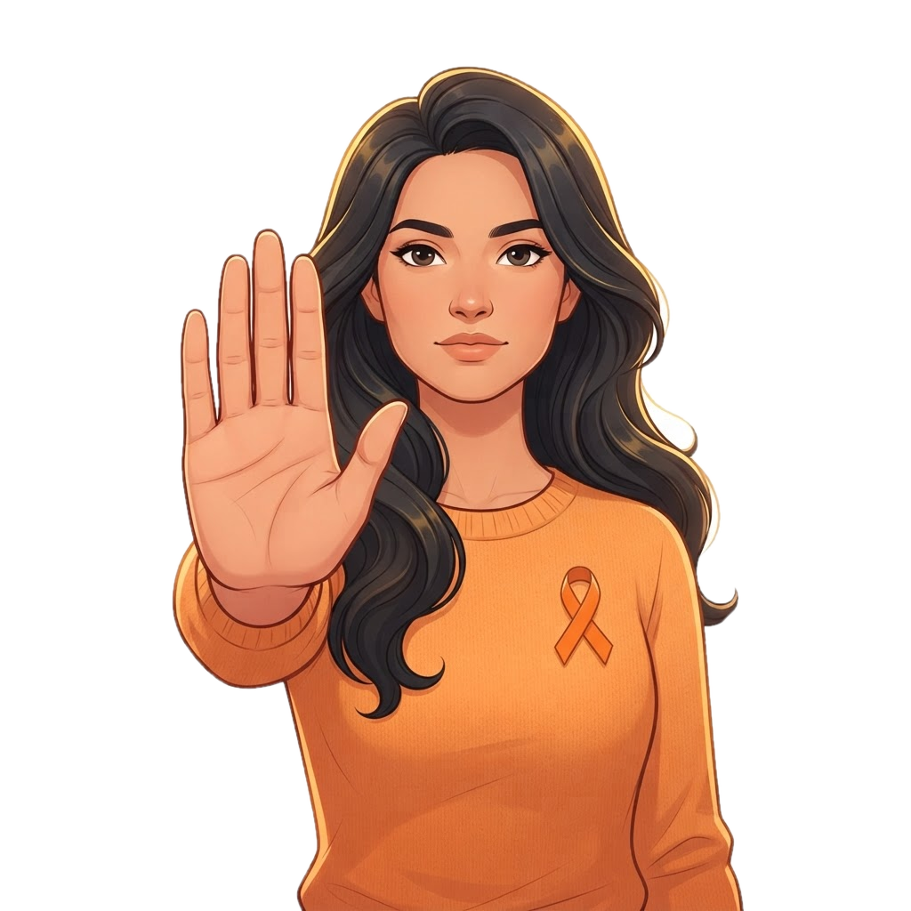

Una vida libre de violencia también es salud
Hoy, Día Internacional de la Eliminación de la Violencia contra la Mujer, recordamos que es un compromiso de todos.
- Si usted o alguien cercano vive violencia, no tiene que enfrentarlo en silencio: hay ayuda.
- Hable con una persona de confianza y busque orientación.
- Para orientación, llame a la línea 155. Si hay peligro inmediato, llame al 123.
Información general. Su salud y su seguridad importan.
Si siente que necesita ayuda profesional, en Santa Helena del Valle IPS le acompañamos con atención integral en psicología
WhatsApp 311 339 8988 · www.santahelenadelvalleips.com